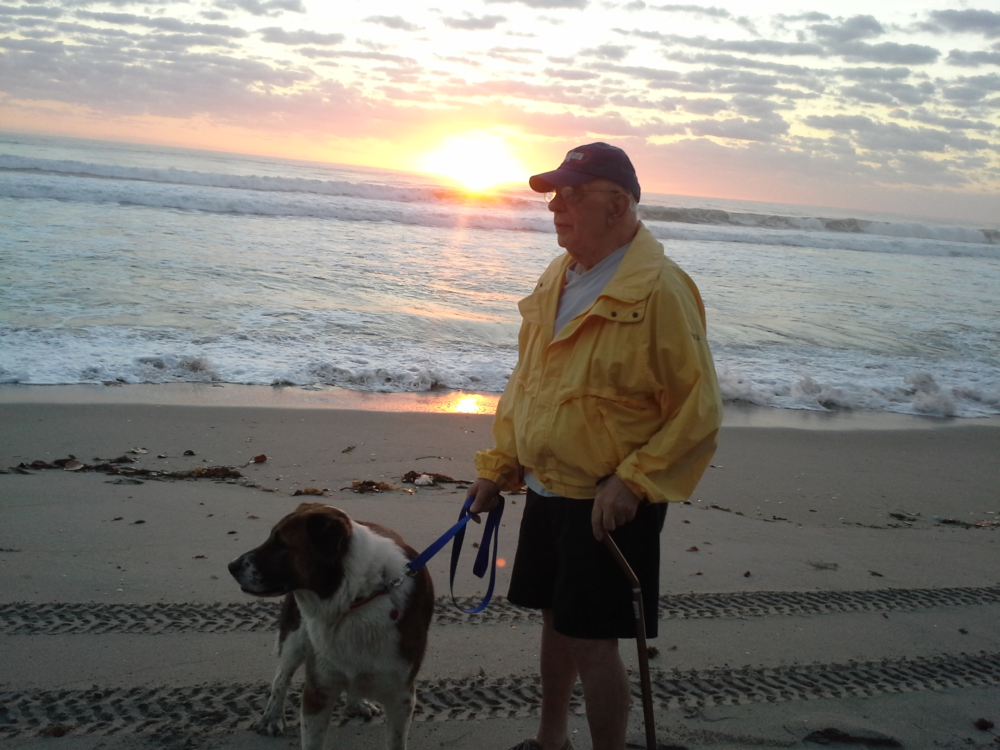

Technically I own some animals. They live back in Florida with my roommates, at my house, in my community, at HOME, where I am temporarily not. Other people named my animals:
Here's Bernie, and the sunset, with my 89-year-old father:
I dig the color purple. Sparkly purple is definitely my jam.
How many websites can I amass?